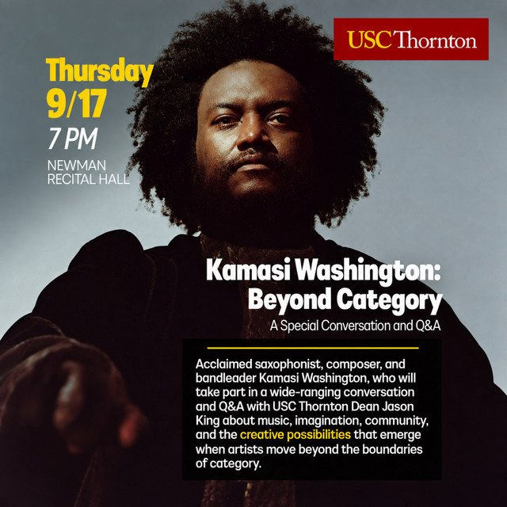

The Eclectic Polymath Podcast · Archive
#006: Hitsville, USA. The Motown Machine and the Factory of Soul

About this episode
Welcome back to The Eclectic Polymath Podcast, a curiosity driven deep dive show built around the questions that pull us in.
After looking at masters, publishing, and the long fight over ownership in the music industry, this episode steps back to one of the systems that helped shape modern popular music in the first place: Motown.
From an $800 family loan to Hitsville U.S.A., we trace how Berry Gordy built more than a record label. He built a machine. Inspired by the efficiency of the Ford assembly line, Motown turned Detroit talent, songwriting, musicianship, image making, and quality control into a repeatable system for creating hits.
Key points
- Welcome back to The Eclectic Polymath Podcast, a curiosity driven deep dive show built around the questions that pull us in.
- After looking at masters, publishing, and the long fight over ownership in the music industry, this episode steps back to one of the systems that helped shape modern popular music in the first place: Motown.
- From an $800 family loan to Hitsville U.S.A., we trace how Berry Gordy built more than a record label.
- Inspired by the efficiency of the Ford assembly line, Motown turned Detroit talent, songwriting, musicianship, image making, and quality control into a repeatable system for creating hits.
- This episode moves through the Funk Brothers, the studio process, the internal quality control meetings, the charm school training, and the business tensions that sat underneath the sound, including royalty disputes and the push for artistic autonomy.
More like this
#186 The Five Percent Nation: From Supreme Mathematics to the Power of Knowledge in Hip-HopOctober 2, 202653:16#185 Erykah Badu: Music, Mysticism, and the Black Cosmic TraditionSeptember 30, 202655:29#181 When a Rap Beef Became a Conspiracy InvestigationSeptember 27, 20261:15:46

#183 Kamasi Washington Live at USC: Beyond CategorySeptember 27, 20261:23:41